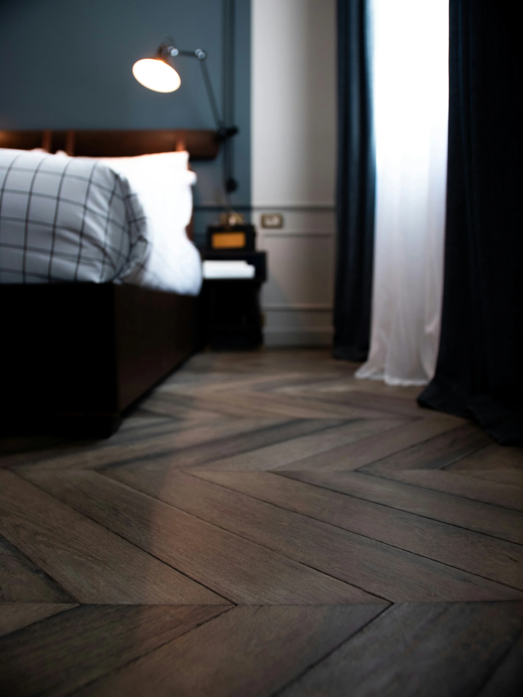
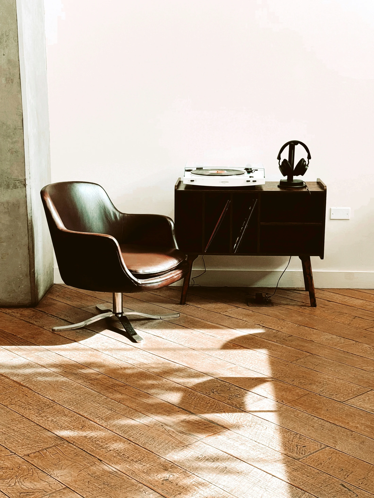

DIE BLEIBT. Qualität, die bleibt.
Böden im Bergischen Land — sorgfältig vorbereitet, präzise verlegt und für viele Jahre gemacht.
Böden, die zu Ihrem Leben passen.
Ich berate unabhängig vom Material, messe sorgfältig auf und verlege so, dass Sie sich viele Jahre keine Gedanken mehr um Ihren Boden machen müssen.


Materialübersicht
Offen beraten • Ehrlich bewertetAusgesucht.
Aufbereitet.
Lieber einmal richtig.
Aufmaß entscheidet
Ich messe selbst. Laser, Richtlatte, Feuchte. Was im Angebot steht, wird verlegt.
Sauberer Abschluss
Sockel auf Gehrung, Übergänge flächenbündig. Die letzten 2% machen den Unterschied.
Ablauf.
Klar und ohne Umwege.
{{ s.t }}
{{ s.d }}
Lothar Meiske.
Bodenleger
aus Überzeugung.
Seit 1998 bin ich als Bodenleger im Bergischen Land tätig. In dieser Zeit habe ich unzählige Böden vorbereitet, verlegt und saniert – vom privaten Wohnraum bis hin zu gewerblichen Objekten. Mein Anspruch: saubere Handwerksarbeit, die viele Jahre Bestand hat.
Für mich beginnt ein guter Boden nicht mit dem Belag, sondern mit dem Untergrund. Deshalb lege ich großen Wert auf eine sorgfältige Vorbereitung des Estrichs, präzise Verarbeitung und hochwertige Materialien.
Ich berate ehrlich und empfehle nur Lösungen, hinter denen ich selbst stehe.